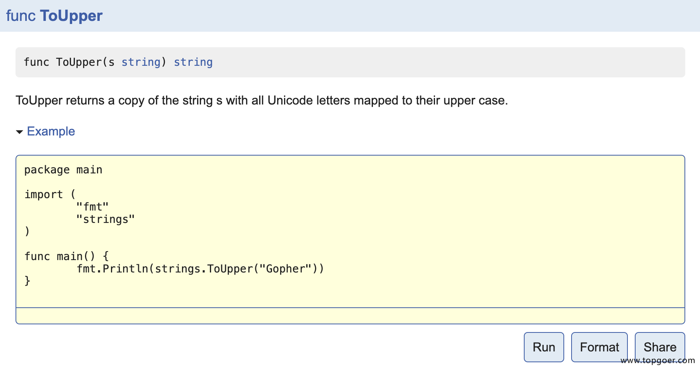

1. 单元测试
不写测试的开发不是好程序员。我个人非常崇尚TDD（Test Driven Development）的，然而可惜的是国内的程序员都不太关注测试这一部分。 这篇文章主要介绍下在Go语言中如何做单元测试和基准测试。
1.1. go test工具
Go语言中的测试依赖go test命令。编写测试代码和编写普通的Go代码过程是类似的，并不需要学习新的语法、规则或工具。
go test命令是一个按照一定约定和组织的测试代码的驱动程序。在包目录内，所有以_test.go为后缀名的源代码文件都是go test测试的一部分，不会被go build编译到最终的可执行文件中。
在*_test.go文件中有三种类型的函数，单元测试函数、基准测试函数和示例函数。
| 类型 | 格式 | 作用 |
|---|---|---|
| 测试函数 | 函数名前缀为Test | 测试程序的一些逻辑行为是否正确 |
| 基准函数 | 函数名前缀为Benchmark | 测试函数的性能 |
| 示例函数 | 函数名前缀为Example | 为文档提供示例文档 |
go test命令会遍历所有的*_test.go文件中符合上述命名规则的函数，然后生成一个临时的main包用于调用相应的测试函数，然后构建并运行、报告测试结果，最后清理测试中生成的临时文件。
Golang单元测试对文件名和方法名，参数都有很严格的要求。
1、文件名必须以xx_test.go命名
2、方法必须是Test[^a-z]开头
3、方法参数必须 t *testing.T
4、使用go test执行单元测试
go test的参数解读：
go test是go语言自带的测试工具，其中包含的是两类，单元测试和性能测试
通过go help test可以看到go test的使用说明：
格式形如： go test [-c] [-i] [build flags] [packages] [flags for test binary]
参数解读：
-c : 编译go test成为可执行的二进制文件，但是不运行测试。
-i : 安装测试包依赖的package，但是不运行测试。
关于build flags，调用go help build，这些是编译运行过程中需要使用到的参数，一般设置为空
关于packages，调用go help packages，这些是关于包的管理，一般设置为空
关于flags for test binary，调用go help testflag，这些是go test过程中经常使用到的参数
-test.v : 是否输出全部的单元测试用例（不管成功或者失败），默认没有加上，所以只输出失败的单元测试用例。
-test.run pattern: 只跑哪些单元测试用例
-test.bench patten: 只跑那些性能测试用例
-test.benchmem : 是否在性能测试的时候输出内存情况
-test.benchtime t : 性能测试运行的时间，默认是1s
-test.cpuprofile cpu.out : 是否输出cpu性能分析文件
-test.memprofile mem.out : 是否输出内存性能分析文件
-test.blockprofile block.out : 是否输出内部goroutine阻塞的性能分析文件
-test.memprofilerate n : 内存性能分析的时候有一个分配了多少的时候才打点记录的问题。这个参数就是设置打点的内存分配间隔，也就是profile中一个sample代表的内存大小。默认是设置为512 * 1024的。如果你将它设置为1，则每分配一个内存块就会在profile中有个打点，那么生成的profile的sample就会非常多。如果你设置为0，那就是不做打点了。
你可以通过设置memprofilerate=1和GOGC=off来关闭内存回收，并且对每个内存块的分配进行观察。
-test.blockprofilerate n: 基本同上，控制的是goroutine阻塞时候打点的纳秒数。默认不设置就相当于-test.blockprofilerate=1，每一纳秒都打点记录一下
-test.parallel n : 性能测试的程序并行cpu数，默认等于GOMAXPROCS。
-test.timeout t : 如果测试用例运行时间超过t，则抛出panic
-test.cpu 1,2,4 : 程序运行在哪些CPU上面，使用二进制的1所在位代表，和nginx的nginx_worker_cpu_affinity是一个道理
-test.short : 将那些运行时间较长的测试用例运行时间缩短
目录结构：
test
|
—— calc.go
|
—— calc_test.go
1.2. 测试函数
1.2.1. 测试函数的格式
每个测试函数必须导入testing包，测试函数的基本格式（签名）如下：
func TestName(t *testing.T){
// ...
}
测试函数的名字必须以Test开头，可选的后缀名必须以大写字母开头，举几个例子：\
func TestAdd(t *testing.T){ ... }
func TestSum(t *testing.T){ ... }
func TestLog(t *testing.T){ ... }
其中参数t用于报告测试失败和附加的日志信息。 testing.T的拥有的方法如下：
func (c *T) Error(args ...interface{})
func (c *T) Errorf(format string, args ...interface{})
func (c *T) Fail()
func (c *T) FailNow()
func (c *T) Failed() bool
func (c *T) Fatal(args ...interface{})
func (c *T) Fatalf(format string, args ...interface{})
func (c *T) Log(args ...interface{})
func (c *T) Logf(format string, args ...interface{})
func (c *T) Name() string
func (t *T) Parallel()
func (t *T) Run(name string, f func(t *T)) bool
func (c *T) Skip(args ...interface{})
func (c *T) SkipNow()
func (c *T) Skipf(format string, args ...interface{})
func (c *T) Skipped() bool
1.2.2. 测试函数示例
就像细胞是构成我们身体的基本单位，一个软件程序也是由很多单元组件构成的。单元组件可以是函数、结构体、方法和最终用户可能依赖的任意东西。总之我们需要确保这些组件是能够正常运行的。单元测试是一些利用各种方法测试单元组件的程序，它会将结果与预期输出进行比较。
接下来，我们定义一个split的包，包中定义了一个Split函数，具体实现如下：
// split/split.go
package split
import "strings"
// split package with a single split function.
// Split slices s into all substrings separated by sep and
// returns a slice of the substrings between those separators.
func Split(s, sep string) (result []string) {
i := strings.Index(s, sep)
for i > -1 {
result = append(result, s[:i])
s = s[i+1:]
i = strings.Index(s, sep)
}
result = append(result, s)
return
}
在当前目录下，我们创建一个split_test.go的测试文件，并定义一个测试函数如下：
// split/split_test.go
package split
import (
"reflect"
"testing"
)
func TestSplit(t *testing.T) { // 测试函数名必须以Test开头，必须接收一个*testing.T类型参数
got := Split("a:b:c", ":") // 程序输出的结果
want := []string{"a", "b", "c"} // 期望的结果
if !reflect.DeepEqual(want, got) { // 因为slice不能比较直接，借助反射包中的方法比较
t.Errorf("excepted:%v, got:%v", want, got) // 测试失败输出错误提示
}
}
此时split这个包中的文件如下：
split $ ls -l
total 16
-rw-r--r-- 1 pprof staff 408 4 29 15:50 split.go
-rw-r--r-- 1 pprof staff 466 4 29 16:04 split_test.go
在split包路径下，执行go test命令，可以看到输出结果如下：
split $ go test
PASS
ok github.com/pprof/studygo/code_demo/test_demo/split 0.005s
一个测试用例有点单薄，我们再编写一个测试使用多个字符切割字符串的例子，在split_test.go中添加如下测试函数：
func TestMoreSplit(t *testing.T) {
got := Split("abcd", "bc")
want := []string{"a", "d"}
if !reflect.DeepEqual(want, got) {
t.Errorf("excepted:%v, got:%v", want, got)
}
}
再次运行go test命令，输出结果如下：
split $ go test
--- FAIL: TestMultiSplit (0.00s)
split_test.go:20: excepted:[a d], got:[a cd]
FAIL
exit status 1
FAIL github.com/pprof/studygo/code_demo/test_demo/split 0.006s
这一次，我们的测试失败了。我们可以为go test命令添加-v参数，查看测试函数名称和运行时间：
split $ go test -v
=== RUN TestSplit
--- PASS: TestSplit (0.00s)
=== RUN TestMoreSplit
--- FAIL: TestMoreSplit (0.00s)
split_test.go:21: excepted:[a d], got:[a cd]
FAIL
exit status 1
FAIL github.com/pprof/studygo/code_demo/test_demo/split 0.005s
这一次我们能清楚的看到是TestMoreSplit这个测试没有成功。 还可以在go test命令后添加-run参数，它对应一个正则表达式，只有函数名匹配上的测试函数才会被go test命令执行。
split $ go test -v -run="More"
=== RUN TestMoreSplit
--- FAIL: TestMoreSplit (0.00s)
split_test.go:21: excepted:[a d], got:[a cd]
FAIL
exit status 1
FAIL github.com/pprof/studygo/code_demo/test_demo/split 0.006s
现在我们回过头来解决我们程序中的问题。很显然我们最初的split函数并没有考虑到sep为多个字符的情况，我们来修复下这个Bug：
package split
import "strings"
// split package with a single split function.
// Split slices s into all substrings separated by sep and
// returns a slice of the substrings between those separators.
func Split(s, sep string) (result []string) {
i := strings.Index(s, sep)
for i > -1 {
result = append(result, s[:i])
s = s[i+len(sep):] // 这里使用len(sep)获取sep的长度
i = strings.Index(s, sep)
}
result = append(result, s)
return
}
这一次我们再来测试一下，我们的程序。注意，当我们修改了我们的代码之后不要仅仅执行那些失败的测试函数，我们应该完整的运行所有的测试，保证不会因为修改代码而引入了新的问题。
split $ go test -v
=== RUN TestSplit
--- PASS: TestSplit (0.00s)
=== RUN TestMoreSplit
--- PASS: TestMoreSplit (0.00s)
PASS
ok github.com/pprof/studygo/code_demo/test_demo/split 0.006s
这一次我们的测试都通过了
1.3. 测试组
我们现在还想要测试一下split函数对中文字符串的支持，这个时候我们可以再编写一个TestChineseSplit测试函数，但是我们也可以使用如下更友好的一种方式来添加更多的测试用例。
func TestSplit(t *testing.T) {
// 定义一个测试用例类型
type test struct {
input string
sep string
want []string
}
// 定义一个存储测试用例的切片
tests := []test{
{input: "a:b:c", sep: ":", want: []string{"a", "b", "c"}},
{input: "a:b:c", sep: ",", want: []string{"a:b:c"}},
{input: "abcd", sep: "bc", want: []string{"a", "d"}},
{input: "枯藤老树昏鸦", sep: "老", want: []string{"枯藤", "树昏鸦"}},
}
// 遍历切片，逐一执行测试用例
for _, tc := range tests {
got := Split(tc.input, tc.sep)
if !reflect.DeepEqual(got, tc.want) {
t.Errorf("excepted:%v, got:%v", tc.want, got)
}
}
}
我们通过上面的代码把多个测试用例合到一起，再次执行go test命令。
split $ go test -v
=== RUN TestSplit
--- FAIL: TestSplit (0.00s)
split_test.go:42: excepted:[枯藤 树昏鸦], got:[ 枯藤 树昏鸦]
FAIL
exit status 1
FAIL github.com/pprof/studygo/code_demo/test_demo/split 0.006s
我们的测试出现了问题，仔细看打印的测试失败提示信息：excepted:[枯藤 树昏鸦], got:[ 枯藤 树昏鸦]，你会发现[ 枯藤 树昏鸦]中有个不明显的空串，这种情况下十分推荐使用%#v的格式化方式。
我们修改下测试用例的格式化输出错误提示部分：
func TestSplit(t *testing.T) {
...
for _, tc := range tests {
got := Split(tc.input, tc.sep)
if !reflect.DeepEqual(got, tc.want) {
t.Errorf("excepted:%#v, got:%#v", tc.want, got)
}
}
}
此时运行go test命令后就能看到比较明显的提示信息了：
split $ go test -v
=== RUN TestSplit
--- FAIL: TestSplit (0.00s)
split_test.go:42: excepted:[]string{"枯藤", "树昏鸦"}, got:[]string{"", "枯藤", "树昏鸦"}
FAIL
exit status 1
FAIL github.com/Q1mi/studygo/code_demo/test_demo/split 0.006s
1.4. 子测试
看起来都挺不错的，但是如果测试用例比较多的时候，我们是没办法一眼看出来具体是哪个测试用例失败了。我们可能会想到下面的解决办法
func TestSplit(t *testing.T) {
type test struct { // 定义test结构体
input string
sep string
want []string
}
tests := map[string]test{ // 测试用例使用map存储
"simple": {input: "a:b:c", sep: ":", want: []string{"a", "b", "c"}},
"wrong sep": {input: "a:b:c", sep: ",", want: []string{"a:b:c"}},
"more sep": {input: "abcd", sep: "bc", want: []string{"a", "d"}},
"leading sep": {input: "枯藤老树昏鸦", sep: "老", want: []string{"枯藤", "树昏鸦"}},
}
for name, tc := range tests {
got := Split(tc.input, tc.sep)
if !reflect.DeepEqual(got, tc.want) {
t.Errorf("name:%s excepted:%#v, got:%#v", name, tc.want, got) // 将测试用例的name格式化输出
}
}
}
上面的做法是能够解决问题的。同时Go1.7+中新增了子测试，我们可以按照如下方式使用t.Run执行子测试：
func TestSplit(t *testing.T) {
type test struct { // 定义test结构体
input string
sep string
want []string
}
tests := map[string]test{ // 测试用例使用map存储
"simple": {input: "a:b:c", sep: ":", want: []string{"a", "b", "c"}},
"wrong sep": {input: "a:b:c", sep: ",", want: []string{"a:b:c"}},
"more sep": {input: "abcd", sep: "bc", want: []string{"a", "d"}},
"leading sep": {input: "枯藤老树昏鸦", sep: "老", want: []string{"枯藤", "树昏鸦"}},
}
for name, tc := range tests {
t.Run(name, func(t *testing.T) { // 使用t.Run()执行子测试
got := Split(tc.input, tc.sep)
if !reflect.DeepEqual(got, tc.want) {
t.Errorf("excepted:%#v, got:%#v", tc.want, got)
}
})
}
}
此时我们再执行go test命令就能够看到更清晰的输出内容了：
split $ go test -v
=== RUN TestSplit
=== RUN TestSplit/leading_sep
=== RUN TestSplit/simple
=== RUN TestSplit/wrong_sep
=== RUN TestSplit/more_sep
--- FAIL: TestSplit (0.00s)
--- FAIL: TestSplit/leading_sep (0.00s)
split_test.go:83: excepted:[]string{"枯藤", "树昏鸦"}, got:[]string{"", "枯藤", "树昏鸦"}
--- PASS: TestSplit/simple (0.00s)
--- PASS: TestSplit/wrong_sep (0.00s)
--- PASS: TestSplit/more_sep (0.00s)
FAIL
exit status 1
FAIL github.com/pprof/studygo/code_demo/test_demo/split 0.006s
这个时候我们要把测试用例中的错误修改回来：
func TestSplit(t *testing.T) {
...
tests := map[string]test{ // 测试用例使用map存储
"simple": {input: "a:b:c", sep: ":", want: []string{"a", "b", "c"}},
"wrong sep": {input: "a:b:c", sep: ",", want: []string{"a:b:c"}},
"more sep": {input: "abcd", sep: "bc", want: []string{"a", "d"}},
"leading sep": {input: "枯藤老树昏鸦", sep: "老", want: []string{"", "枯藤", "树昏鸦"}},
}
...
}
我们都知道可以通过-run=RegExp来指定运行的测试用例，还可以通过/来指定要运行的子测试用例，例如：go test -v -run=Split/simple只会运行simple对应的子测试用例。
1.5. 测试覆盖率
测试覆盖率是你的代码被测试套件覆盖的百分比。通常我们使用的都是语句的覆盖率，也就是在测试中至少被运行一次的代码占总代码的比例。
Go提供内置功能来检查你的代码覆盖率。我们可以使用go test -cover来查看测试覆盖率。例如：
split $ go test -cover
PASS
coverage: 100.0% of statements
ok github.com/pprof/studygo/code_demo/test_demo/split 0.005s
从上面的结果可以看到我们的测试用例覆盖了100%的代码。
Go还提供了一个额外的-coverprofile参数，用来将覆盖率相关的记录信息输出到一个文件。例如：
split $ go test -cover -coverprofile=c.out
PASS
coverage: 100.0% of statements
ok github.com/pprof/studygo/code_demo/test_demo/split 0.005s
上面的命令会将覆盖率相关的信息输出到当前文件夹下面的c.out文件中，然后我们执行go tool cover -html=c.out，使用cover工具来处理生成的记录信息，该命令会打开本地的浏览器窗口生成一个HTML报告。
1.6. 基准测试
1.6.1. 基准测试函数格式
基准测试就是在一定的工作负载之下检测程序性能的一种方法。基准测试的基本格式如下：
func BenchmarkName(b *testing.B){
// ...
}
基准测试以Benchmark为前缀，需要一个*testing.B类型的参数b，基准测试必须要执行b.N次，这样的测试才有对照性，b.N的值是系统根据实际情况去调整的，从而保证测试的稳定性。 testing.B拥有的方法如下：
func (c *B) Error(args ...interface{})
func (c *B) Errorf(format string, args ...interface{})
func (c *B) Fail()
func (c *B) FailNow()
func (c *B) Failed() bool
func (c *B) Fatal(args ...interface{})
func (c *B) Fatalf(format string, args ...interface{})
func (c *B) Log(args ...interface{})
func (c *B) Logf(format string, args ...interface{})
func (c *B) Name() string
func (b *B) ReportAllocs()
func (b *B) ResetTimer()
func (b *B) Run(name string, f func(b *B)) bool
func (b *B) RunParallel(body func(*PB))
func (b *B) SetBytes(n int64)
func (b *B) SetParallelism(p int)
func (c *B) Skip(args ...interface{})
func (c *B) SkipNow()
func (c *B) Skipf(format string, args ...interface{})
func (c *B) Skipped() bool
func (b *B) StartTimer()
func (b *B) StopTimer()
1.6.2. 基准测试示例
我们为split包中的Split函数编写基准测试如下：
func BenchmarkSplit(b *testing.B) {
for i := 0; i < b.N; i++ {
Split("枯藤老树昏鸦", "老")
}
}
基准测试并不会默认执行，需要增加-bench参数，所以我们通过执行go test -bench=Split命令执行基准测试，输出结果如下：
split $ go test -bench=Split
goos: darwin
goarch: amd64
pkg: github.com/pprof/studygo/code_demo/test_demo/split
BenchmarkSplit-8 10000000 203 ns/op
PASS
ok github.com/pprof/studygo/code_demo/test_demo/split 2.255s
其中BenchmarkSplit-8表示对Split函数进行基准测试，数字8表示GOMAXPROCS的值，这个对于并发基准测试很重要。10000000和203ns/op表示每次调用Split函数耗时203ns，这个结果是10000000次调用的平均值。
我们还可以为基准测试添加-benchmem参数，来获得内存分配的统计数据。
split $ go test -bench=Split -benchmem
goos: darwin
goarch: amd64
pkg: github.com/pprof/studygo/code_demo/test_demo/split
BenchmarkSplit-8 10000000 215 ns/op 112 B/op 3 allocs/op
PASS
ok github.com/pprof/studygo/code_demo/test_demo/split 2.394s
其中，112 B/op表示每次操作内存分配了112字节，3 allocs/op则表示每次操作进行了3次内存分配。 我们将我们的Split函数优化如下：
func Split(s, sep string) (result []string) {
result = make([]string, 0, strings.Count(s, sep)+1)
i := strings.Index(s, sep)
for i > -1 {
result = append(result, s[:i])
s = s[i+len(sep):] // 这里使用len(sep)获取sep的长度
i = strings.Index(s, sep)
}
result = append(result, s)
return
}
这一次我们提前使用make函数将result初始化为一个容量足够大的切片，而不再像之前一样通过调用append函数来追加。我们来看一下这个改进会带来多大的性能提升：
split $ go test -bench=Split -benchmem
goos: darwin
goarch: amd64
pkg: github.com/pprof/studygo/code_demo/test_demo/split
BenchmarkSplit-8 10000000 127 ns/op 48 B/op 1 allocs/op
PASS
ok github.com/pprof/studygo/code_demo/test_demo/split 1.423s
这个使用make函数提前分配内存的改动，减少了2/3的内存分配次数，并且减少了一半的内存分配。
1.6.3. 性能比较函数
上面的基准测试只能得到给定操作的绝对耗时，但是在很多性能问题是发生在两个不同操作之间的相对耗时，比如同一个函数处理1000个元素的耗时与处理1万甚至100万个元素的耗时的差别是多少？再或者对于同一个任务究竟使用哪种算法性能最佳？我们通常需要对两个不同算法的实现使用相同的输入来进行基准比较测试。
性能比较函数通常是一个带有参数的函数，被多个不同的Benchmark函数传入不同的值来调用。举个例子如下：
func benchmark(b *testing.B, size int){/* ... */}
func Benchmark10(b *testing.B){ benchmark(b, 10) }
func Benchmark100(b *testing.B){ benchmark(b, 100) }
func Benchmark1000(b *testing.B){ benchmark(b, 1000) }
例如我们编写了一个计算斐波那契数列的函数如下：
// fib.go
// Fib 是一个计算第n个斐波那契数的函数
func Fib(n int) int {
if n < 2 {
return n
}
return Fib(n-1) + Fib(n-2)
}
我们编写的性能比较函数如下：
// fib_test.go
func benchmarkFib(b *testing.B, n int) {
for i := 0; i < b.N; i++ {
Fib(n)
}
}
func BenchmarkFib1(b *testing.B) { benchmarkFib(b, 1) }
func BenchmarkFib2(b *testing.B) { benchmarkFib(b, 2) }
func BenchmarkFib3(b *testing.B) { benchmarkFib(b, 3) }
func BenchmarkFib10(b *testing.B) { benchmarkFib(b, 10) }
func BenchmarkFib20(b *testing.B) { benchmarkFib(b, 20) }
func BenchmarkFib40(b *testing.B) { benchmarkFib(b, 40) }
运行基准测试：
split $ go test -bench=.
goos: darwin
goarch: amd64
pkg: github.com/pprof/studygo/code_demo/test_demo/fib
BenchmarkFib1-8 1000000000 2.03 ns/op
BenchmarkFib2-8 300000000 5.39 ns/op
BenchmarkFib3-8 200000000 9.71 ns/op
BenchmarkFib10-8 5000000 325 ns/op
BenchmarkFib20-8 30000 42460 ns/op
BenchmarkFib40-8 2 638524980 ns/op
PASS
ok github.com/pprof/studygo/code_demo/test_demo/fib 12.944s
这里需要注意的是，默认情况下，每个基准测试至少运行1秒。如果在Benchmark函数返回时没有到1秒，则b.N的值会按1,2,5,10,20,50，…增加，并且函数再次运行。
最终的BenchmarkFib40只运行了两次，每次运行的平均值只有不到一秒。像这种情况下我们应该可以使用-benchtime标志增加最小基准时间，以产生更准确的结果。例如：
split $ go test -bench=Fib40 -benchtime=20s
goos: darwin
goarch: amd64
pkg: github.com/pprof/studygo/code_demo/test_demo/fib
BenchmarkFib40-8 50 663205114 ns/op
PASS
ok github.com/pprof/studygo/code_demo/test_demo/fib 33.849s
这一次BenchmarkFib40函数运行了50次，结果就会更准确一些了。
使用性能比较函数做测试的时候一个容易犯的错误就是把b.N作为输入的大小，例如以下两个例子都是错误的示范：
// 错误示范1
func BenchmarkFibWrong(b *testing.B) {
for n := 0; n < b.N; n++ {
Fib(n)
}
}
// 错误示范2
func BenchmarkFibWrong2(b *testing.B) {
Fib(b.N)
}
1.6.4. 重置时间
b.ResetTimer之前的处理不会放到执行时间里，也不会输出到报告中，所以可以在之前做一些不计划作为测试报告的操作。例如：
func BenchmarkSplit(b *testing.B) {
time.Sleep(5 * time.Second) // 假设需要做一些耗时的无关操作
b.ResetTimer() // 重置计时器
for i := 0; i < b.N; i++ {
Split("枯藤老树昏鸦", "老")
}
}
1.6.5. 并行测试
func (b B) RunParallel(body func(PB))会以并行的方式执行给定的基准测试。
RunParallel会创建出多个goroutine，并将b.N分配给这些goroutine执行， 其中goroutine数量的默认值为GOMAXPROCS。用户如果想要增加非CPU受限（non-CPU-bound）基准测试的并行性， 那么可以在RunParallel之前调用SetParallelism 。RunParallel通常会与-cpu标志一同使用。
func BenchmarkSplitParallel(b *testing.B) {
// b.SetParallelism(1) // 设置使用的CPU数
b.RunParallel(func(pb *testing.PB) {
for pb.Next() {
Split("枯藤老树昏鸦", "老")
}
})
}
执行一下基准测试：
split $ go test -bench=.
goos: darwin
goarch: amd64
pkg: github.com/pprof/studygo/code_demo/test_demo/split
BenchmarkSplit-8 10000000 131 ns/op
BenchmarkSplitParallel-8 50000000 36.1 ns/op
PASS
ok github.com/pprof/studygo/code_demo/test_demo/split 3.308s
还可以通过在测试命令后添加-cpu参数如go test -bench=. -cpu 1来指定使用的CPU数量。
1.7. Setup与TearDown
测试程序有时需要在测试之前进行额外的设置（setup）或在测试之后进行拆卸（teardown）。
1.7.1. TestMain
通过在*_test.go文件中定义TestMain函数来可以在测试之前进行额外的设置（setup）或在测试之后进行拆卸（teardown）操作。
如果测试文件包含函数:func TestMain(m *testing.M)那么生成的测试会先调用 TestMain(m)，然后再运行具体测试。TestMain运行在主goroutine中, 可以在调用 m.Run前后做任何设置（setup）和拆卸（teardown）。退出测试的时候应该使用m.Run的返回值作为参数调用os.Exit。
一个使用TestMain来设置Setup和TearDown的示例如下：
func TestMain(m *testing.M) {
fmt.Println("write setup code here...") // 测试之前的做一些设置
// 如果 TestMain 使用了 flags，这里应该加上flag.Parse()
retCode := m.Run() // 执行测试
fmt.Println("write teardown code here...") // 测试之后做一些拆卸工作
os.Exit(retCode) // 退出测试
}
需要注意的是：在调用TestMain时, flag.Parse并没有被调用。所以如果TestMain 依赖于command-line标志 (包括 testing 包的标记), 则应该显示的调用flag.Parse。
1.7.2. 子测试的Setup与Teardown
有时候我们可能需要为每个测试集设置Setup与Teardown，也有可能需要为每个子测试设置Setup与Teardown。下面我们定义两个函数工具函数如下：
// 测试集的Setup与Teardown
func setupTestCase(t *testing.T) func(t *testing.T) {
t.Log("如有需要在此执行:测试之前的setup")
return func(t *testing.T) {
t.Log("如有需要在此执行:测试之后的teardown")
}
}
// 子测试的Setup与Teardown
func setupSubTest(t *testing.T) func(t *testing.T) {
t.Log("如有需要在此执行:子测试之前的setup")
return func(t *testing.T) {
t.Log("如有需要在此执行:子测试之后的teardown")
}
}
使用方式如下：
func TestSplit(t *testing.T) {
type test struct { // 定义test结构体
input string
sep string
want []string
}
tests := map[string]test{ // 测试用例使用map存储
"simple": {input: "a:b:c", sep: ":", want: []string{"a", "b", "c"}},
"wrong sep": {input: "a:b:c", sep: ",", want: []string{"a:b:c"}},
"more sep": {input: "abcd", sep: "bc", want: []string{"a", "d"}},
"leading sep": {input: "枯藤老树昏鸦", sep: "老", want: []string{"", "枯藤", "树昏鸦"}},
}
teardownTestCase := setupTestCase(t) // 测试之前执行setup操作
defer teardownTestCase(t) // 测试之后执行testdoen操作
for name, tc := range tests {
t.Run(name, func(t *testing.T) { // 使用t.Run()执行子测试
teardownSubTest := setupSubTest(t) // 子测试之前执行setup操作
defer teardownSubTest(t) // 测试之后执行testdoen操作
got := Split(tc.input, tc.sep)
if !reflect.DeepEqual(got, tc.want) {
t.Errorf("excepted:%#v, got:%#v", tc.want, got)
}
})
}
}
测试结果如下：
split $ go test -v
=== RUN TestSplit
=== RUN TestSplit/simple
=== RUN TestSplit/wrong_sep
=== RUN TestSplit/more_sep
=== RUN TestSplit/leading_sep
--- PASS: TestSplit (0.00s)
split_test.go:71: 如有需要在此执行:测试之前的setup
--- PASS: TestSplit/simple (0.00s)
split_test.go:79: 如有需要在此执行:子测试之前的setup
split_test.go:81: 如有需要在此执行:子测试之后的teardown
--- PASS: TestSplit/wrong_sep (0.00s)
split_test.go:79: 如有需要在此执行:子测试之前的setup
split_test.go:81: 如有需要在此执行:子测试之后的teardown
--- PASS: TestSplit/more_sep (0.00s)
split_test.go:79: 如有需要在此执行:子测试之前的setup
split_test.go:81: 如有需要在此执行:子测试之后的teardown
--- PASS: TestSplit/leading_sep (0.00s)
split_test.go:79: 如有需要在此执行:子测试之前的setup
split_test.go:81: 如有需要在此执行:子测试之后的teardown
split_test.go:73: 如有需要在此执行:测试之后的teardown
=== RUN ExampleSplit
--- PASS: ExampleSplit (0.00s)
PASS
ok github.com/Q1mi/studygo/code_demo/test_demo/split 0.006s
1.8. 示例函数
1.8.1. 示例函数的格式
被go test特殊对待的第三种函数就是示例函数，它们的函数名以Example为前缀。它们既没有参数也没有返回值。标准格式如下：
func ExampleName() {
// ...
}
1.8.2. 示例函数示例
下面的代码是我们为Split函数编写的一个示例函数：
func ExampleSplit() {
fmt.Println(split.Split("a:b:c", ":"))
fmt.Println(split.Split("枯藤老树昏鸦", "老"))
// Output:
// [a b c]
// [ 枯藤 树昏鸦]
}
为你的代码编写示例代码有如下三个用处：
示例函数能够作为文档直接使用，例如基于web的godoc中能把示例函数与对应的函数或包相关联。
示例函数只要包含了// Output:也是可以通过go test运行的可执行测试。
split $ go test -run Example
PASS
ok github.com/pprof/studygo/code_demo/test_demo/split 0.006s
示例函数提供了可以直接运行的示例代码，可以直接在golang.org的godoc文档服务器上使用Go Playground运行示例代码。下图为strings.ToUpper函数在Playground的示例函数效果。
